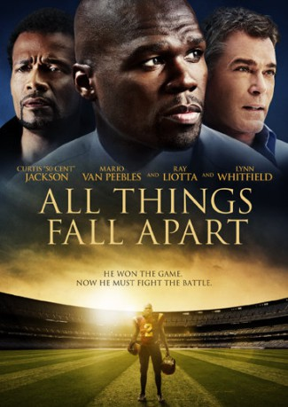

IMDB-Wertung: 5.5 / 10
IMDB-Wertung: 5.5 / 10  Metascore:
Metascore: 
A drama centered around a promising football running back during his senior year in college.
Alternativ: Come Back or Die Tryin (Originaltitel)
 IMDB-Wertung: 5.5 / 10 Metascore:
A drama centered around a promising football running back during his senior year in college.
Jahr: 2011
Dauer: 110 Minuten
FSK: 16
Land: USA Studio: Image EntertainmentTonspuren: DTS - ,
Untertitel:
Auflösung: 1080p (1920x1040) Größe: 7639 MB
Regisseur:  Mario Van Peebles
Mario Van Peebles
Drehbuch: 50 Cent
Soundtrack: Tree Adams
Darsteller:
 50 Cent als Deon
50 Cent als Deon Ray Liotta als Dr. Brintall
Ray Liotta als Dr. Brintall Lynn Whitfield als Bee
Lynn Whitfield als Bee Steve Eastin als Coach Harper
Steve Eastin als Coach Harper Corey Large als Paramedic
Corey Large als Paramedic Sammy A. Publes als Pee Wee Coach
Sammy A. Publes als Pee Wee Coach Hugh Maguire als Professor
Hugh Maguire als Professor Ambyr Childers als Sherry
Ambyr Childers als Sherry Elizabeth Rodriguez als Mrs. Lopez
Elizabeth Rodriguez als Mrs. Lopez Mario Van Peebles als Eric
Mario Van Peebles als EricDatei: X:\2011(A-F)\All Things Fall Apart (2011, FSK16, 1920x1040).mkv seit 27.07.2018
Festplatte: HD 2010(G-Z)-2011(A-F)
 Es gibt insgesamt 86 Filme in der Gruppe '2011(A-F)'
Es gibt insgesamt 86 Filme in der Gruppe '2011(A-F)'